Well-Being by Design
Exploring the connection between Mind, Body and Space.
- Modular Hub
- Material & Ecology
- Making Lab
- Futures Gallery
- Well-Being Lab
- EDIT Dialogues
Date
Sat, 28 Nov, 2026
Venue
Atrium Atlas Building 2
About
As the School of Design celebrates 10 years of creativity, collaboration and design education, we are delighted to invite you to The Edit! Collective – Space Edition 2026, the first flagship event by the Department of Interior Design & Built Environment.
Taking place on Saturday, 28 November 2026, at The Atrium, ATLAS SkillTech University, Mumbai, this edition is centred around the provocation ‘Well-Being by Design’ — exploring the relationship between mind, body and space, and how the environments we inhabit shape the way we feel, think and connect.
Bringing together student showcases, multidisciplinary dialogues and participatory experiences, the event invites you to engage with new ideas around the future of work and well-being. From a student-designed modular well-being hub and explorations of future workspaces to material innovations, sensory experiments and conversations with practitioners, it promises a day of discovery, exchange and collective imagination.
THE SPACE COLLECTIVE — How Will We Work Well?
Part of ISDI EDIT Collective 2026, The Space Collective is an Interior Design-led initiative exploring the future of work and human well-being through space, body, mind, material, technology, ecology and culture. Guided by People • Place • Purpose • Impact, it is conceived not simply as an exhibition, but as an elegant intellectual and experimental meeting ground for designers, brands, students, artists, makers, researchers and innovators.
Three academic explorations — Future Workspaces, Energy & Ecology and Digital Fabrication — converge in a 1:1 Modular Well-Being Hub, an inhabitable prototype for future working environments.
Around it, six interconnected experiences form the Collective: Modular Hub, Material & Ecology, Making Lab, Futures Gallery, Well-Being Lab and EDIT Dialogues.
Visitors encounter speculative workplaces, emerging materials, circular and regenerative systems, parametric fabrication and sensory experiments around light, sound, scent, movement, food, air, rest and connection. Industry collaborators, architects, artists, chefs, scientists, technologists and material innovators are invited not merely to exhibit, but to question, experiment and contribute.
EDIT Dialogues becomes its intellectual heart — intimate conversations, unexpected pairings and Long Table dialogues around the future of human experience.
The evening culminates in AFTER FORM, a subtle performance connecting soil → material → body → space → human → future, before dissolving naturally into an informal gathering.
Ultimately, The Space Collective is a meeting place for people rethinking how we live, work, make, eat, dress and coexist — collectively prototyping what comes next.
Campus
ATLAS Skilltech University - Building 2,BKC 51, Next to Equinox Business Park,
Bandra Kurla Complex Junction, Mumbai 51